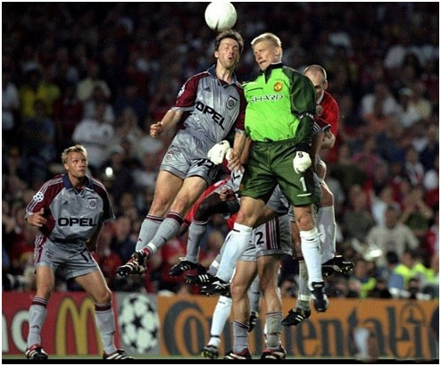
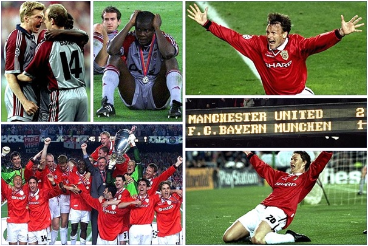

Chương 31

amp Nou, Barcelona là nơi sẽ diễn ra trận chung kết Champions League giữa Manchester United và Bayern Munich. Chuẩn bị cho trận đấu, CLB Anh mang sang TBN một lực lượng hùng hậu, ngoài cầu thủ, BLĐ và BHL, còn có tổng thư ký Ken Merrett trong vai trưởng đoàn; Ken Ramsden, trợ lý của Merret; một đầu bếp; một chuyên gia dinh dưỡng; một bác sỹ; hai nhà vật lý trị liệu; một nhân viên mát xa; và hai người phụ trách trang phục. Đội bay trên máy bay siêu thanh Concorde, ngụ tại khách sạn năm sao trong khu nghỉ dưỡng Sitges, cách Barcelona 20 dặm về phía nam.
Trước giờ sinh tử, Ferguson thừa hiểu nếu làm căng sẽ phản tác dụng. Thay vì gây áp lực, bắt học trò ra sân với tinh thần một mất một còn, ông dặn mọi người cứ thư giãn, đừng suy nghĩ gì nhiều. Sau các buổi tập nhẹ, cầu thủ thoải mái đùa giỡn, bơi lội, đánh bài, như đang tận hưởng một chuyến du lịch, nghỉ dưỡng.
Tất nhiên, ngoài mặt thì thế, chứ trong lòng, mỗi người mang một tâm trạng khác nhau. “Tôi căng thẳng ghê lắm”, Jesper Blomqvist thú nhận, “Suốt ngày cứ phải tự trấn an chính mình: Mày sẽ chơi tốt, mày sẽ chơi tốt, mày chạy nhanh hơn thiên hạ mà”. Nicky Butt thì không hồi hộp lắm, mà hơi khó chịu trước giới truyền thông. Trước giờ, Butt vốn đóng góp thầm lặng, không nổi bật như các đồng đội cùng Thế Hệ Vàng, giờ bỗng được ra sân thay Keane trong trận chung kết, nên mọi cặp mắt đều đổ dồn vào anh. “Ngưỡng mộ thật!”, Butt nhìn Beckham tấm tắc, “Bị theo đuổi như thế mà chịu được. Tôi thì chịu thôi”. Không như Blomqvist và Butt, Yorke vô tư như mọi ngày. Được hỏi có thấy áp lực không, anh cười toe: “Tôi vốn phổi bò mà. Áp lực ở Kosovokia[1], nơi người dân không có cái ăn, bị dội bom trên đầu. Đá bóng là niềm vui chứ sao lại áp lực. Vừa được làm điều mình thích này, vừa được trả cả đống tiền.”
Vắng Keane và Scholes, Butt chắn chắn có chỗ, nhưng lấy ai đá cạnh Butt đây? Ferguson cân nhắc việc kéo Johnsen hay Phil Neville lên hàng tiền vệ, hoặc đẩy Beckham hay Giggs vào giữa. Vì không muốn xáo trộn hàng thủ, ông nghiêng về phương án hai. Dùng Giggs ở tiền vệ trung tâm, sẽ phải hy sinh những pha đột phá xé gió bên đường biên; dùng Beckham sẽ thiếu vắng những cú tạt siêu hạng. Cách nào cũng có khuyết điểm, song đành phải chọn một. Fergie quyết định cho Beckham đá giữa, đồng thời đẩy Giggs sang cánh phải, nhường cánh trái cho Blomqvist.
Tuy chỉ được phân phối 38000 vé, ít nhất 55000 người hâm mộ Quỷ Đỏ vào được sân. Nhiều người phải bỏ ra từ vài trăm đến cả ngàn bảng để mua vé chợ đen, trong khi giá vé chính thức vỏn vẹn 28 bảng. Số người không có vé phải ở bên ngoài cũng phải 50000. CĐV United nhuộm đỏ cả xứ Catalonia; các khách sạn ở Barcelona chật cứng, không còn chỗ trống. Một số fan kiếm chẳng ra phòng, phải dựng lều ngủ ngoài bãi biển.
Ngày 26 tháng 5, 1999, đúng 90 năm ngày sinh Sir Matt Busby, Manchester United bước vào trận chung kết Cúp C1 đầu tiên trong kỷ nguyên Alex Ferguson, đọ tài cùng Bayern Munich, đội bóng họ đã hòa hai lần tại vòng đấu bảng. Đội hình ra sân của Quỷ Đỏ như sau: Thủ môn kiêm đội trưởng: Schmeichel; Hậu vệ: Gary Neville, Irwin, Johnsen, Stam; Tiền vệ:Giggs, Blomqvist, Beckham, Butt; Tiền đạo: Cole, Yorke. Solskjaer, như thường lệ, ngồi trên ghế dự bị. Dường như linh cảm điều gì, ngay trước khi trọng tài Collina thổi còi khai cuộc, anh quay qua nói cùng trợ huấn Jim Ryan: “Đêm nay là đêm của em!”
Chiều rộng sân Camp Nou bình thường là 72 mét, nay UEFA ra lệnh phải thu hẹp xuống còn 68, bằng đúng kích cỡ sân Olympic của Bayern, giúp đội bóng Đức có lợi thế nho nhỏ. Từ phút đầu tiên, “hùm xám” đã tràn lên tấn công ào ạt, nhồi bóng liên tục cho cặp tiền đạo Jancker và Zickler. Phút thứ sáu, Johnsen phạm lỗi với Jancker ngay trước vòng cấm địa. Bayern thực hiện pha phối hợp đá phạt hoàn hảo: Babbel chen vào đứng chung với hậu vệ United, rồi hụp xuống tránh bóng, để Basler đá xuyên rào, mở tỷ số. Bị thua sớm, Quỷ Đỏ trở nên lúng túng. Sơ đồ chiến thuật của Ferguson không phát huy hiệu quả: Blomqvist đá cánh trái không bằng Giggs, Giggs đá cánh phải không bằng Beckham, trong khi Beckham và Butt ở giữa rõ ràng bị Effenberg và Jeremies lấn át. Cầu thủ Bayern thường gọi Beckham là “ông thần tạt bóng”, sợ nhất những quả tạt chết người của anh. Việc Beckham đá bó vào giữa là món quà trời cho giành cho họ. Thiếu tiếp liệu từ tuyến hai, cặp Cole-Yorke đói bóng, mờ nhạt.
Giờ nghỉ giữa hai hiệp, Alex Ferguson không nổi giận. Ông thiết tha nhắn nhủ học trò:
-Nếu chúng ta thua hôm nay, các con sẽ phải lên bục nhận huy chương bạc. Lúc ấy, các con đứng gần cúp lắm, gần trong tấc gang, nhưng mà không sao chạm được nó. Hãy nghĩ mà xem, cơ hội như thế này ít khi lặp lại, trong tương lai chưa chắc có lần thứ hai.Đã đến thật gần lại bỏ lỡ, không tiếc lắm hay sao? Rồi đây, các con sẽ phải hối hận cả một đời. Vậy nên hãy cố gắng lên, không được cho phép mình thất bại. Nếu các con không tận hết sức lực, thì đừng trở về gặp ta[2].
“Đó là một trong những bài “diễn văn” hay nhất nhất tôi từng nghe”, Jaap Stam nhận định, “nghe xong những lời đó, kẻ nhút nhát cũng biến thành chiến binh”. “Cái ý nghĩ đi ngang qua cúp mà không chạm được khiến tôi ớn lạnh”, Giggs bổ sung, “lời của thầy thúc đẩy toàn đội”.
Lên tinh thần, United thi đấu tốt hơn trong hiệp hai. Bayern vẫn tỏ ra nguy hiểm, hai lần sút rung khung gỗ, song Quỷ Đỏ cũng tạo được cơ hội, giữ thế trận giằng co, kiên trì đợi đối thủ lộ điểm yếu. Phút 67, Ferguson đưa Sheringham vào thay Blomqvist, chuyển sang dùng đội hình 4-3-3: Giggs về lại cánh trái, Beckham về cánh phải, Yorke lùi xuống đá cao nhất trên đỉnh hàng tiền vệ kim cương, trong khi Sheringham đá cặp với Cole. Phút 81, ông lại thay nốt Cole bằng Solskjaer. Phía Bayern cũng điều chỉnh nhân sự, cho lão tướng Matthaus ra nghỉ.
Phút 90, tỷ số vẫn là 1-0 nghiêng về Bayern. Trên khán đài, huyền thoại George Best đã rời sân, phần vì muốn tránh cảnh bị các fan bu quanh xin chữ ký sau khi trận đấu kết thúc, phần vì không muốn chứng kiến đội nhà thua cuộc. Bình luận viên Marcel Reif nhận định: “Một lần nữa trong một trận cầu lớn, người Đức đã thắng người Anh”. Các phóng viên cắm cúi hoàn tất bài tường thuật, với những lời có cánh giành tặng “hùm xám”, và những phê bình nặng nề nhắm vào Alex Ferguson. Bản thân Ferguson gục đầu, chấp nhận số phận, giữa lúc chủ tịch UEFA Lennart Johansson rời ghế, bước xuống đường hầm, chuẩn bị trao giải. Đi ngang qua Bobby Charlton, ông an ủi: “Không may rồi, Bobby ạ”. Tổng thư ký UEFA Gerhard Aigner cũng vào trong, buộc những dải băng mang huy hiệu Bayern lên cúp bạc. CĐV Đức thì không cần phải nói, đã bắt đầu ăn mừng. Đúng lúc ấy, United được hưởng phạt góc.
Đã tuyên bố rời đội khi mùa giải kết thúc, Peter Schmeichel lòng nóng như lửa đốt. Không muốn nhận thất bại trong lần cuối cùng khoác màu áo đỏ, chàng thủ môn Đan Mạch rời bỏ khung thành, lao vào vòng cấm địa đối phương, quyết tâm đánh ván bài được ăn cả, ngã về không. Anh đã từng tham gia tấn công, đánh đầu ghi bàn trước đây, nay sao không liều thêm một lần? Bóng được Beckham câu vào vòng cấm, sượt đầu Schmeichel, chạm phải Yorke, rồi đến chân hậu vệ Thorsten Fink, người trước đó vào thay Matthaus. Fink phá bóng ra, đúng ngay vào chỗ Ryan Giggs đang đứng. Pha sút cầu may của Giggs đi thiếu lực, không mong gì thành bàn, nhưng Sheringham có mặt đúng lúc, đệm thêm một cú, cháy lưới Bayern. Nếu Matthaus vẫn còn trên sân, mọi chuyện có thể đã rất khác. Cầu thủ lão luyện như Matthaus ắt không phá bóng thiếu dứt khoát như Fink.

Schmeichel lên tham gia tấn công vào phút cuối (Ảnh: Ronaldo7.net)
“Chuẩn bị đá hiệp phụ thôi”, trợ lý Steve McClaren[3] hô, “Trở về đội hình 4-4-2”. “Từ từ đã chú”, Ferguson chỉnh ngay, “Trận đấu đã hết đâu”. Bên ngoài sân, George Best nghe khán đài dậy sóng, vội đi tìm quán rượu chạy vào xem tiếp. Lennart Johansson vừa ló đầu ra đường hầm, thấy hai bên đã hòa, lại quay lên, đi về chỗ.
Phút 93, phút bù giờ cuối cùng, lúc trận đấu chỉ còn tính từng giây,United lại được hưởng phạt góc. Vẫn là Beckham với cú tạt sở trường, Sheringham đánh đầu nối, đưa bóng vào góc xa. Solskjaer nhanh chân dứt điểm, khiến Oliver Kahn chỉ biết bất lực nhìn theo. 90000 CĐV trên khán đài, và cả tỷ người theo dõi qua màn ảnh nhỏ, không ai tin nổi vào mắt mình. Họ vừa được chứng kiến trận chung kết C1 kịch tích nhất tự cổ chí kim, khi chỉ trong hai phút ngắn ngủi, lịch sử thay đổi 180 độ. Munich cũng từng thua ngược cay đắng vào năm 1987, song lần ấy, Porto ghi hai bàn vào các phút 79 và 81, không đến nỗi muộn màng như thế này.
Bóng vào lưới rồi, Best mới vào được quán rượu, và Johansson mới lên hết cầu thang. Hai người bỏ lỡ, không xem được cả hai bàn thắng. Gerhard Aigner ở trong phòng, vừa trang trí cúp xong thì có người hộc tốc chạy vào, miệng la bài hãi “Đổi băng, đổi băng mau”. “Cái gì cơ?”, Aigner há hốc mồm, “Bộ điên hay sao?”
Đúng là điên thật! Cầu thủ Bayern không hiểu chuyện gì vừa xảy ra. Người Đức vốn nổi tiếng tinh thần thép, nhưng vẫn không chống nổi cú sốc quá lớn. Bên ngoài đường biên, Lothar Matthaus thẫn thờ, không nói nên lời, mắt ngân ngấn nước. Samuel Kuffour ngã vật xuống sân, đoạn ngồi lên, vừa khóc vừa la, đấm như điên dại xuống mặt cỏ. Effenberg, Kahn, Tarnat và Babbel đều ngồi bất động, khiến trọng tài Collina phải xốc nách vực họ dậy, đá tiếp…13 giây còn lại.
Kẻ thua rã rời, còn người thắng ngất ngây hạnh phúc. Người hùng Solskjaer cười tươi như hoa; đêm chung kết thật sự là đêm của anh. Sheringham thì nhẹ nhõm cả người. Bao năm đá cho Tottenham không một danh hiệu, anh sang United với ước mong giành cúp, thế mà mùa đầu tiên tay trắng vẫn hoàn trắng tay, bị fan hâm mộ Spurs hát nhạc chế giễu: “Teddy ơi, Teddy ơi, anh tới Old Trafford, và cái đ. gì anh cũng thắng”. Nay thì chẳng ai dám chê Sheringham nữa, bởi như lời bình luận viên Clive Tyldesley, anh và các đồng đội đã đoạt hết “tất cả những gì tim khát khao”!
Khi United gỡ hòa, Dwight Yorke chỉ cho là ăn may, chưa phải phép màu, và vẫn nghĩ ưu thế thuộc về Bayern. Đến lúc tỷ số là 2-1, anh mới nghẹn lời: “Thật là phép màu rồi, không còn từ nào khác để diễn tả”. “Ơn trên can thiệp đấy”, Cole cũng hồ hởi, “Đêm nay Chúa ủng hộ chúng ta”. Cole ôm Yorke nhảy Samba ở giữa sân, rồi đi vòng vòng trong trạng thái lâng lâng, không biết chung quanh là mơ hay thực. “Làm thế quái nào mà cuối cùng mình lại thắng nhỉ?”, trong đầu anh cứ lặp đi lặp lại câu hỏi.
Ryan Giggs là cầu thủ đầu tiên chạy đến ôm Alex Ferguson. 13 năm trước, khi họ gặp nhau lần đầu, Ferguson mới chân ướt chân ráo đến Anh, chưa biết mình trụ lại được bao lâu; Giggs hãy còn là cậu bé con miệng còn hơi sữa. Đêm nay, dưới bầu trời Barcelona, cả hai đều đi vào huyền thoại. Trò tuy mới 25, nhưng đã là cầu thủ thâm niên nhất tại Old Trafford; thầy chính thức bước vào ngôi đền thiêng, chung hàng với Matt Busby, Brian Clough, Jock Stein…Fergie biết rõ, dù cho có hàng tá chức VĐQG và Cúp FA, một HLV không thể trở thành vĩ đại nếu thiếu Cúp C1. Nay bộ sưu tập danh hiệu đã hoàn tất, ông không còn gì phải day dứt. Trả lời báo giới về cảm nghĩ sau trận đấu, trong cơn cuồng nhiệt, ông chỉ thốt được một câu: “Không tin nổi, không tin nổi…Bóng đá! Cái trò chơi chết tiệt!”
Trên khán đài danh dự, Sir Bobby Charlton khóc. Những người hùng 1968 khác: Stiles, Stepney, Foulkes, Brennan, Crerand…cũng đều rơi lệ. Họ nhớ về khoảnh khắc hào hùng của chính mình, khi chứng kiến Schmeichel lên nhận cúp. “Cảm giác lúc ấy ư?”, Schmeichel kể, “Giống như lúc được trao đứa con đầu lòng. À, mà phải nhân đôi lên nữa cơ. Làm cha thiêng liêng thật, song đa số chúng ta đều được làm cha ít nhất một lần. Cúp Châu Âu thì dễ gì mà rớ tới”.
Có người nói: United thắng nhờ may mắn. Hiển nhiên, may mắn luôn dự phần trong mọi chiến thắng, nhưng nếu nhìn vào những lá thăm, ta mới thấy trước khi gặp may, Quỷ Đỏ đã cực kỳ xui xẻo. Ngay ở vòng đầu, họ rơi vào bảng tử thần, gặp phải Bayern Munich và Barcelona, vào vòng trong cũng toàn đụng phải những đối thủ hoặc ngang ngửa hoặc ở chiếu trên như Inter và Juventus. Để so sánh, hãy nhìn vào hành trình của Juventus mùa 1995-1996: Chung bảng với Borussia Dortmund, Glasgow Rangers và Steaua Bucarest, tứ kết gặp Real Madrid[4] bán kết gặp Nantes, mãi đến trận cuối cùng mới chạm trán với đối thủ ngang sức ngang tài là Ajax Amsterdam.
Ngay ở Cúp FA, United cũng xui đến không thể xui hơn: Liên tiếp phải gặp các cường địch: Liverpool, Chelsea, Arsenal. Các đối thủ còn lại như Middlesbrough, Fulham, Newcastle cũng toàn đội Ngoại Hạng, không hề có một đội Hạng Nhất, Hạng Nhì nào. Có thể nói, dù là ở VĐQG, Cúp FA, hay C1, đường đến chức vô địch của United đều thuộc loại gian nan nhất trong lịch sử.
Tuy gian nan, đội không những thắng lợi, mà lúc nào cũng thể hiện lối chơi tấn công biến ảo, làm say đắm lòng người. Tại giải Ngoại Hạng, họ ghi đến 80 bàn, vượt xa á quân Arsenal (59); tại Cúp C1, họ đá 13 trận bất bại, ghi 31 bàn thắng. Dwight Yorke giành chức đồng Vua Phá Lưới nước Anh với 18 lần lập công, ngang bằng Owen và Hasselbaink. Tính tất cả các giải, số bàn của Yorke lên tới 29. Andy Cole theo sau với 24, thứ ba là Solskjaer với 18, dù chỉ dự bị. Beckham tuy phá lưới có 9 lần, song kiến tạo hàng loạt cơ hội cho đồng đội, và luôn là cầu thủ năng nổ nhất[5]. Phong độ chói sáng giúp anh về nhì trong danh sách Cầu Thủ Xuất Sắc Nhất Thế Giới của FIFA[6] và Quả Bóng Vàng Châu Âu của France Football (đều sau Rivaldo).
Trở thành CLB thứ tư trong lịch sử giành cú ăn ba, sau Celtic, Ajax Amsterdam và PSV Eindhoven, United được đài BBC bầu là Đội Thể Thao Xuất Sắc Nhất Đại Anh Quốc năm 1999. Đây là lần thứ hai đội nhận danh hiệu cao quý này, sau lần đầu năm 1968. HLV Alex Ferguson thì được nữ hoàng Elizabeth II vinh phong tước Hiệp Sỹ. Ba thành phố Glasgow, Aberdeen và Manchester cũng lần lượt phong ông làm Công Dân Danh Dự. Tháng 10, 1999, trận cầu tôn vinh Sir Alex được tổ chức giữa Manchester United và hội tuyển Các Ngôi Sao Thế Giới. Lẽ tất yếu, bên cạnh các danh hiệu, không thể thiếu…tiền thưởng. Ước tính chiến dịch Champions League đem về cho United tới 15 triệu bảng, nên BLĐ khá rộng tay trong việc thưởng công. Ferguson lãnh bonus 350000, ký hợp đồng mới ba năm trị giá năm triệu. Cầu thủ mỗi người bỏ túi 150000.

Hai bàn thắng kịch tính của Sheringham và Solskjaer đem về cúp bạc cho United, và nỗi buồn khôn nguôi cho Bayern (Ảnh: Manchesterunitedforum.org)
Chú thích:
[1] Kosovo: Lãnh thổ thuộc Nam Tư (cũ). Chiến tranh Kosovo diễn ra từ tháng 2, 1998 tới tháng 6, 1999.
[2] Trước trận đấu, Ferguson gặp gỡ học trò cũ Steve Archibald. Trong lúc trò chuyện, Archibald nhắc đến cảm giác tiếc nuối, đau đớn trong màu áo Barcelona, khi thua trong trận chung kết Cúp C1 năm 1986. Fergie dùng lại ý của Archibald để khích lệ học trò.
[3] Brian Kidd rời chức trợ lý vào giữa mùa, được thay thế bởi McClaren.
[4]Thời điểm 1995-1996, Real Madrid hoàn toàn lép vế so với Juventus. Ngay năm 1998, việc họ thắng Juve để vô địch Champions League cũng là điều bất ngờ.
[5] Như trong trận bán kết lượt về C1 với Juventus, anh chạy tổng cộng 14.1km, bỏ xa tất cả các cầu thủ khác.
[6] Giải thưởng của FIFA bắt đầu được trao từ 1991.